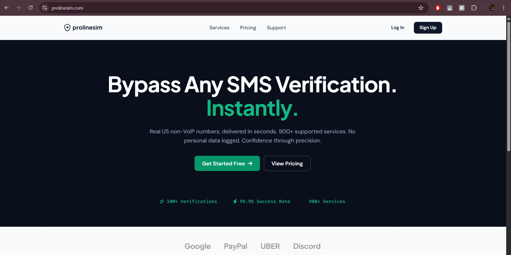
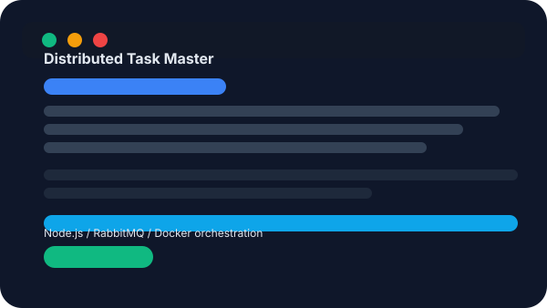
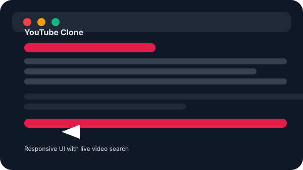

Backend systems
Node.js, Express, Laravel, FastAPI, REST APIs, queues, caching, and secure integration patterns for systems that need to stay reliable.
Available for ambitious products
Software Engineer with 4+ years of experience delivering production-grade FinTech, SaaS, and AI-enabled applications—where reliable APIs, thoughtful automation, and business-critical workflows meet.
CURRENT FOCUS
AI + BackendCORE STACK
Node.js · TypeScriptPython · LaravelPostgreSQL · MongoDB01 / ABOUT
My work lives at the intersection of backend architecture, financial workflows, and intelligent automation. I enjoy taking the hard, unglamorous problems—data reconciliation, asynchronous processing, legacy logic, third-party sync—and making them fast, clear, and resilient.
Based in Mumbai, India. B.Sc. Statistics, Guru Nanak Khalsa College.
02 / EXPERTISE
Node.js, Express, Laravel, FastAPI, REST APIs, queues, caching, and secure integration patterns for systems that need to stay reliable.
Practical experience with invoicing, payment reconciliation, repayment schedules, charges, disbursement, and foreclosure flows in FinTech.
LLM extraction, prompt engineering, AI agents, Gemini API, MCP, and n8n workflows that remove manual effort without losing control.
MySQL, PostgreSQL, MongoDB, Redis, RabbitMQ, Docker, Grafana, AWS, and disciplined performance investigation.
03 / SELECTED WORK
Personal projects that reflect how I think about integrations, payments, and scalable processing.

01 / LIVE PLATFORM
Live OTP verification platform with multi-provider SMS delivery, automatic provider switching, and automated order processing. Integrated BTCPay Server to support cryptocurrency payments.
Visit platform
02 / SYSTEM DESIGN
Asynchronous task processing system built around a RabbitMQ producer-consumer architecture, scalable workers, and containerized services.
View source
03 / FRONTEND BUILD
Responsive video discovery interface with search and playback previews, built to create a polished, fast user experience.
View demo04 / EXPERIENCE
Four years across enterprise SaaS, NBFC FinTech, and product integrations.
05 / TOOLKIT
Languages PHP, JavaScript, TypeScript, Python
Backend Node.js, Express, Laravel, FastAPI, REST APIs, RabbitMQ, Redis
Frontend React, AngularJS
Data & DevOps MySQL, PostgreSQL, MongoDB, Docker, AWS, Jenkins, Grafana
Certified Oracle Agentic AI Foundations Associate · Python Master Programming & Development